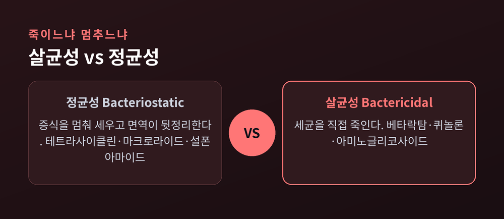

이번 글에서는 항생제가 세균을 죽이는 원리와, 그 항생제가 점점 듣지 않게 되는 내성의 진화를 정리해 보겠습니다. 결론부터 말씀드리면, 항생제는 사람 세포에는 없고 세균에만 있는 약점을 골라 공격합니다. 그리고 내성은 세균이 애써 만들어 내는 것이 아니라, 항생제라는 환경이 걸러 낸 자연선택의 결과입니다.
항생제의 출발점은 하나의 질문입니다. 어떻게 내 몸속 세포는 멀쩡한데 세균만 죽을까요.
답은 '선택독성'에 있습니다. 사람 세포와 세균 세포는 생김새가 다릅니다. 항생제는 그 차이를 표적으로 삼습니다.
차이는 크게 셋입니다. 첫째, 세균은 펩티도글리칸이라는 세포벽을 두르고 있지만 사람 세포에는 그런 벽이 없습니다. 둘째, 세균의 리보솜은 70S(30S와 50S로 구성)인데, 사람의 리보솜은 80S로 크기와 구조가 다릅니다. 셋째, 세균은 엽산을 스스로 만들어 써야 하지만 사람은 음식에서 얻습니다.
이 세 가지 약점이 곧 항생제의 표적입니다. 사람에게 없는 것을 겨누니, 세균만 골라 무너뜨릴 수 있는 것입니다.
참고로 이 원리를 처음 세상에 알린 사람이 알렉산더 플레밍입니다. 1928년 페니실린을 발견했고, 플로리·체인과 함께 1945년 노벨생리의학상을 받았습니다.
항생제는 세균의 약점을 네 방향에서 공격합니다. 세포벽, 단백질 공장, 유전 정보, 그리고 대사 경로입니다.
첫째는 세포벽 공격입니다. 페니실린으로 대표되는 베타락탐계가 여기 속합니다. 이 약은 세균이 세포벽을 엮는 효소인 PBP, 특히 트랜스펩티데이스를 붙잡습니다. 이 효소는 펩티도글리칸 사슬을 서로 교차연결해 벽을 튼튼하게 짜는 일을 합니다. 연결이 막히면 벽은 계속 만들어지되 엮이지 못한 가닥이 곧바로 분해됩니다. 합성과 분해가 헛도는 순환에 빠지는 셈입니다. 결국 벽이 약해진 세균은 내부 압력을 못 견디고 터집니다. 사람 세포에는 이 벽이 없으니 안전합니다.
둘째는 단백질 공장 공격입니다. 세균의 리보솜(70S)을 노립니다. 아미노글리코사이드는 30S에 단단히 붙어 mRNA를 잘못 읽게 만들어 엉터리 단백질을 찍어 내게 합니다. 테트라사이클린은 30S에 붙어 tRNA가 자리를 잡지 못하게 막습니다. 마크로라이드는 50S의 배출 터널을 막아, 짧은 단백질 사슬이 더 자라지 못하도록 길을 끊습니다. 사람 리보솜은 80S라 이 약들이 붙지 못합니다.
셋째는 유전 정보 공격입니다. 퀴놀론계는 세균이 DNA를 풀고 감는 효소인 DNA 자이레이스와 토포아이소머레이스 IV를 표적으로 합니다. 이 약은 효소를 그냥 막는 데 그치지 않습니다. 효소를 DNA 위에 붙들어 둔 채 이중가닥을 끊어 놓고, 그 끊긴 DNA가 풀려나오면서 세균을 죽입니다. 몸을 지키던 효소를 독으로 바꿔 버리는 셈입니다.
넷째는 대사 경로 공격입니다. 설폰아마이드는 세균이 엽산을 만드는 효소 DHPS를 막습니다. 원래 기질인 PABA와 생김새가 비슷해서, 효소의 결합 자리를 대신 차지해 버립니다. 엽산이 떨어지면 DNA 재료가 동나고 세균은 분열을 멈춥니다. 사람은 엽산을 음식에서 얻으니 타격이 적습니다.
항생제라고 다 세균을 곧바로 죽이는 것은 아닙니다.
세균을 직접 죽이는 약을 살균성이라 하고, 증식을 멈춰 세워 면역이 뒷정리하도록 돕는 약을 정균성이라 합니다. 세포벽을 공격하는 베타락탐, 유전 정보를 끊는 퀴놀론, 30S를 붙잡는 아미노글리코사이드는 대체로 살균성입니다. 테트라사이클린과 마크로라이드, 설폰아마이드는 대체로 정균성입니다.

다만 이 구분이 절대적이지는 않습니다. 같은 약이라도 용량이나 세균 종류에 따라 성격이 섞이거나 바뀔 수 있습니다. 그래서 "이 약은 무조건 살균"이라고 단정하기는 어렵습니다.
문제는 세균이 가만있지 않는다는 데 있습니다.
세균이 항생제를 무력화하는 방법은 크게 넷입니다.
첫째, 효소로 약을 분해합니다. 대표가 베타락타메이스입니다. 이 효소는 페니실린 같은 베타락탐의 고리를 잘라 무력화합니다. 세균은 여기서 더 나아가 확장형 효소, 카바페넴까지 분해하는 효소로 무장하기도 합니다.
둘째, 표적을 바꿉니다. 항생제가 달라붙던 효소나 리보솜의 모양을 살짝 바꿔, 약이 아예 붙지 못하게 만듭니다.
셋째, 약을 퍼냅니다. 유출펌프라는 장치로 세포 안에 들어온 항생제를 능동적으로 밖으로 밀어내 농도를 낮춥니다.
넷째, 유전자를 주고받습니다. 이것이 가장 무섭습니다. 내성 유전자가 플라스미드를 타고 세균과 세균 사이를 건너다닙니다. 부모에서 자식으로만 전해지는 것이 아니라, 옆에 있는 남남인 세균끼리도 내성 설계도를 넘겨줍니다. 이 수평적 유전자 전달이 다제내성을 빠르게 퍼뜨리는 통로입니다.
내성을 두고 흔히 "세균이 약에 적응했다"고 말합니다. 조금 더 정확히 보면, 적응이 아니라 선택입니다.
세균 집단 안에는 우연한 돌연변이로, 혹은 남에게서 받은 유전자로 내성을 가진 개체가 극소수 섞여 있습니다. 여기에 항생제가 들어오면 감수성 세균은 죽고 내성 세균만 살아남습니다. 살아남은 소수가 자리를 차지하고 번식합니다. 몇 세대만 지나면 집단 전체가 내성으로 물듭니다. 이것이 자연선택입니다.
예전엔 이 과정이 먼 이야기처럼 보였습니다. 지금은 다릅니다. 페니실린이 대량으로 쓰이기 시작한 지 10년 안에 내성균이 나타났습니다.
놀라운 것은 플레밍이 이미 이를 내다봤다는 점입니다. 그는 1945년 노벨상 강연에서, 용량이 너무 낮으면 세균이 살아남아 내성을 배운다고 경고했습니다. "페니실린을 쓰려면 충분히 쓰라"는 그의 말은 지금도 유효합니다.
그래서 오남용이 문제입니다. WHO는 사람과 동물, 식물에서의 항생제 오남용을 내성균 발생의 주된 동인으로 지목합니다. 필요 없는데 쓰고, 필요한데 모자라게 쓰는 일이 세균에게 훈련의 기회를 줍니다.
내성은 이제 통계로 모습을 드러냅니다.
2019년 한 해, 세균 내성에 직접 기인한 사망은 약 127만 명, 내성과 연관된 사망은 약 495만 명으로 추정됐습니다. 대표적 다제내성균인 MRSA(메티실린 내성 황색포도상구균)의 직접 사망은 1990년 5만 7,200명에서 2021년 13만 명으로 두 배 넘게 늘었습니다. 균종 가운데 증가폭이 가장 컸습니다.
앞으로가 더 무겁습니다. 2024년 란셋의 첫 글로벌 분석은 2025년부터 2050년까지 세균 내성으로 3,900만 명 이상이 직접 사망할 것으로 내다봤습니다.
정리하면 이렇습니다. 항생제는 사람에게 없는 세균의 약점을 골라 무너뜨리는 정교한 무기입니다. 그러나 그 무기를 자주 휘두를수록, 그 무기를 견뎌 낸 세균만 골라 남깁니다.
"항생제를 쓸수록 항생제가 듣지 않는다." 이 역설이 우리가 처한 자리입니다.
완벽한 해법은 아직 없습니다. 다만 한 가지는 분명합니다. 처방받은 만큼 정확히, 필요할 때만 쓰는 절제가 지금으로선 가장 확실한 방어라는 것입니다.
세균과 인간의 오랜 경주에서, 우리가 앞설 수 있느냐고 물으신다면 — 그것은 결국 약을 쓰는 우리의 손에 달려 있다고 답하겠습니다.